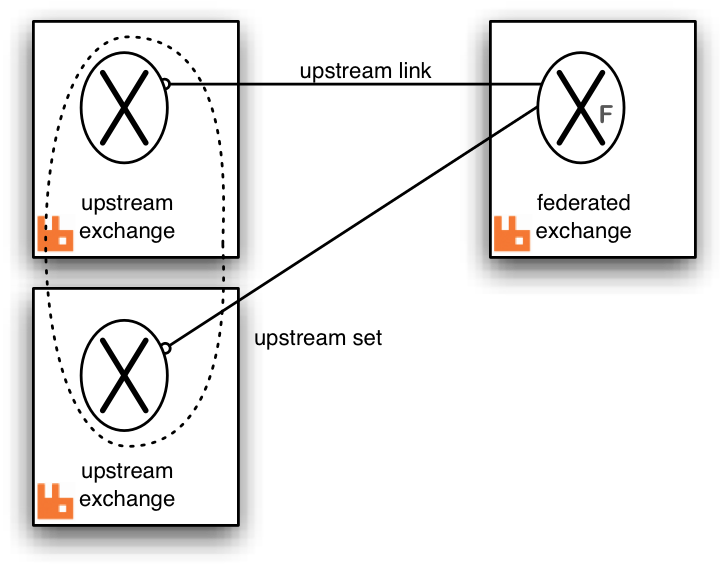

Federation Plugin
The high level goal of the federation plugin is to transmit messages between brokers without requiring clustering. This is useful for various reasons:
- Loose coupling
-
The federation plugin can transmit messages between brokers
(or clusters) in different administrative domains:
- they may have different users and virtual hosts;
- they may run on different versions of RabbitMQ and Erlang.
- WAN-friendly
- The federation plugin uses AMQP to communicate between brokers, and is designed to tolerate intermittent connectivity.
- Specificity
- A broker can contain federated and local-only components - you don't need to federate everything if you don't want to.
- Scalability
- Federation does not require n2 connections between n brokers (although this is the easiest way to set things up), which should mean it scales better.
For the time being, federation is primarily useful in pub/sub scenarios.
What does it do?
The federation plugin allows you to make exchanges federated.
- What does a federated exchange do?
-
A federated exchange links to other exchanges (called upstream exchanges). Logically (see next item), messages published to the upstream exchanges are copied to the federated exchange, as though they were published directly to it. The upstream exchanges do not need to be reconfigured and they do not have to be on the same broker or in the same cluster.
Here is a diagram showing a single federated exchange in one broker linking to a set of two upstream exchanges in other brokers.
All of the configuration needed to establish the upstream links and the federated exchange is in the broker with the federated exchange.
- Are all messages copied?
-
Only those messages that need to be copied are propagated. This is an optimisation arranged dynamically by the federation plugin. (See below.)
- How does a federated exchange link to its upstream exchanges?
-
The federated exchange will connect to all its upstream exchanges using AMQP. When declaring or configuring the federated exchange each upstream exchange is listed with the connection properties to be used to establish the link.
- Can I federate a federated exchange?
-
There is nothing to prevent a federated exchange being 'upstream' from another federated exchange. One can even form 'loops', for example, exchange A declares exchange B to be upstream from it, and exchange B declares exchange A to be upstream from it. More complex multiply-connected arrangements are allowed.
To prevent messages being continually copied and re-routed (in a never-ending cycle) there is a limit placed on the number of times a message can be copied over a link (see max-hops below). It is recommended that all the exchanges linked by federation are of the same type. Mixing types will lead to strange routing behaviour.
- Can I federate any exchange?
-
Nearly. You can't federate the default exchange (named ''), since that is really just a way to directly address queues. You also can't federate exchanges that are marked as internal (since exchanges federate messages that are published directly to them, and you can't publish directly to an internal exchange).
- What are typical uses for federated exchanges?
-
One typical use would be to have the same "logical" exchange distributed over many brokers. Each broker would declare a federated exchange with all the other federated exchanges upstream. (The links would form a complete bi-directional graph on n exchanges.)
Another use would be to implement massive fanout - a single "root" exchange in one broker (which need not be federated) can be declared as upstream by many other federated exchanges in other brokers. In turn, each of these can be upstream for many more exchanges, and so on.
See the example diagrams below for some possible arrangements.
Implementation
Inter-broker communication is implemented using AMQP (optionally secured with SSL). Bindings are grouped together and bind / unbind commands are sent to the upstream exchange. Therefore the federated exchange only receives messages for which it has a subscription. The bindings are sent upstream asynchronously - so the effect of adding or removing a binding is only guaranteed to be seen eventually.
The messages are buffered in a queue created in the upstream exchange's broker. This is called the upstream queue. It is the upstream queue which is bound to the upstream exchange with the grouped bindings. It is possible to tailor some of the properties of this queue in the upstream configuration.
Here is a detailed diagram showing a single federated exchange linking to a single upstream exchange including the upstream queue and bindings created by the federation plugin shown in grey. The fat arrow on the upstream link indicates messages republished by the federated exchange. Some potential publisher clients are shown publishing to both exchanges.

Publications to either exchange may be received by queues bound to the federated exchange, but publications directly to the federated exchange cannot be received by queues bound to the upstream exchange.
Getting Started
The federation plugin is included in the RabbitMQ distribution. To enable it, use rabbitmq-plugins:
rabbitmq-plugins enable rabbitmq_federation
When using the management plugin, you will also want to enable rabbitmq_federation_management:
rabbitmq-plugins enable rabbitmq_federation_management
When using a federation in a cluster, all the nodes of the cluster must have the federation plugin installed. Any node can declare a federated exchange and its properties are shared in the cluster as usual. If a node fails, links to upstream exchanges will be recreated on a surviving node.
Information about federation is stored in the RabbitMQ database, along with users, permissions, queues, etc. There are three levels of configuration involved in federation:
- Upstreams - each upstream defines how to connect to another broker.
- Upstream sets - each upstream set groups together a set of upstreams for exchanges to use for federation.
- Policies - each policy selects a set of exchanges, and applies an upstream set to those exchanges.
In practice for simple use cases you can almost ignore the existence of upstream sets, since there is an implicitly-defined upstream set called all to which all upstreams are added.
Upstreams and upstream sets are both instances of parameters. Like exchanges and queues, each virtual host has its own distinct set of parameters and policies. For more generic information on parameters and policies, see the documentation.
Parameters and policies can be set in three ways - either with an invocation of rabbitmqctl, a call to the management HTTP API, or (usually) through the web UI presented by rabbitmq_federation_management. (The web UI does not present all possibilities - in particular, it does not allow you to manage upstream sets.)
A simple example
Here we will federate all the built-in exchanges except for the default exchange, with a single upstream. The upstream will be defined to buffer messages when disconnected for up to one hour (3600000ms).
Define an upstream:
| rabbitmqctl |
rabbitmqctl set_parameter federation-upstream my-upstream \ '{"uri":"amqp://server-name","expires":3600000}' |
|---|---|
| rabbitmqctl (Windows) |
rabbitmqctl set_parameter federation-upstream my-upstream ^ "{""uri"":""amqp://server-name"",""expires"":3600000}" |
| HTTP API |
PUT /api/parameters/federation-upstream/%2f/my-upstream {"value":{"uri":"amqp://server-name","expires":3600000}} |
| Web UI | Navigate to Admin > Federation Upstreams > Add a new upstream. Enter "my-upstream" next to Name, "amqp://server-name" next to URI, and 36000000 next to Expiry. Click Add upstream. |
Then define a policy to use this upstream:
| rabbitmqctl | rabbitmqctl set_policy federate-me "^amq\." '{"federation-upstream-set":"all"}' |
|---|---|
| rabbitmqctl (Windows) | rabbitmqctl set_policy federate-me "^amq\." "{""federation-upstream-set"":""all""}" |
| HTTP API |
PUT /api/policies/%2f/federate-me {"pattern":"^amq\.", "definition":{"federation-upstream-set":"all"}} |
| Web UI | Navigate to Admin > Policies > Add / update a policy. Enter "federate-me" next to Name, "^amq\." next to Regexp and "federation-upstream-set" = "all" in the first line next to Policy. Click Add policy. |
We tell the policy to federate all exchanges whose names begin with "amq." (i.e. all the built in exchanges except for the default exchange) with (implicit) low priority, and to federate them using the implicitly created upstream set "all", which includes our newly-created upstream. Any other matching policy with a priority greater than 0 will take precedence over this policy.
The built in exchanges should now be federated. You can check that the policy has applied to the exchanges by checking the exchanges list in management or with:
rabbitmqctl list_exchanges name policy | grep federate-me
And you can check that federation links for each exchange have come up with Admin > Federation Status > Running Links or with:
rabbitmqctl eval 'rabbit_federation_status:status().'
In general there will be one federation link for each upstream that is applied to an exchange. So for example with three exchanges and two upstreams for each there will be six links.
For simple use this should be all you need - you will probably want to look at the AMQP URI reference.
Configuration Reference
Upstreams
A federation-upstream parameter specifies how to connect to a broker. It takes the form:
rabbitmqctl set_parameter federation-upstream name 'json-object'
The json-object can contain the following keys:
- uri
-
The AMQP URI(s) for the upstream. Mandatory. See the AMQP URI reference for information on how RabbitMQ treats AMQP URIs in general, and the shovel reference for some extensions for SSL and SASL, which are also supported by federation.
Note that this field can either be a string, or a list of strings. If more than one string is provided, the federation plugin will randomly pick one URI from the list. This can be used to connect to an upstream cluster and ensure the link will eventually find another node in the event that one fails. It's probably not a great idea to use multiple URIs that do not point to the same cluster.
To connect to multiple URIs simultaneously use multiple upstreams.
- prefetch-count
- The maximum number of unacknowledged messages copied over a link at any one time. Default is 1000.
- reconnect-delay
- The duration (in seconds) to wait before reconnecting to the broker after being disconnected. Default is 1.
- max-hops
- The maximum number of federation links that a message can traverse before it is discarded. Default is 1.
- expires
-
The expiry time (in milliseconds) after which an upstream queue may be deleted, if a connection to the upstream broker is lost. The default is 'none', meaning the queue should never expire.
This setting controls how long the upstream queue will last before it is eligible for deletion if the connection is lost.
This value is used to set the "x-expires" argument for the upstream queue.
- message-ttl
-
The expiry time for messages in the upstream queue (see expires), in milliseconds. Default is 'none', meaning messages should never expire.
This value is used to set the "x-message-ttl" argument for the upstream queue.
- ack-mode
-
Determines how the link should acknowledge messages. If set to on-confirm (the default), messages are acknowledged to the upstream broker after they have been confirmed downstream. This handles network errors and broker failures without losing messages, and is the slowest option.
If set to on-publish, messages are acknowledged to the upstream broker after they have been published downstream. This handles network errors without losing messages, but may lose messages in the event of broker failures.
If set to no-ack, message acknowledgements are not used. This is the fastest option, but may lose messages in the event of network or broker failures.
- trust-user-id
-
Determines how federation should interact with the validated user-id feature. If set to true, federation will pass through any validated user-id from the upstream, even though it cannot validate it itself. If set to false or not set, it will clear any validated user-id it encounters. You should only set this to true if you trust the upstream server (and by extension, all its upstreams) not to forge user-ids.
- ha-policy
- Determines the "x-ha-policy" argument for the upstream queue (see expires). This is only of interest when connecting to old brokers which determine queue HA mode using this argument. Default is 'none', meaning the queue is not HA.
Upstream sets
Each upstream-set list is a mapping from a name to a list of upstream exchanges. They look like:
rabbitmqctl set_parameter federation-upstream-set name '[json-object, json-object, ...]'
The keys of the JSON objects can be:
- upstream
- The name of an upstream. Mandatory.
- exchange
- The name of the upstream exchange. Default is to use the same name as the federated exchange.
In addition, any of the properties from an upstream can be overridden in an upstream set.
There is an implicitly-defined upstream set, all, which contains all upstreams.
local-username
The local-username parameter specifies the user under which to publish messages to the (local) federated exchanges. The default is "guest". This user will need the appropriate permissions to publish messages to these exchanges. Example:
rabbitmqctl set_parameter federation local-username '"guest"'
local-nodename
The local-nodename parameter specifies the name this node should use to identify itself to other nodes in the federation graph. (The default is constructed from the Erlang node and the machine's fully-qualified domain name.)
It is important to specify it explicitly if your DNS will not give machines distinct names.
Example:
rabbitmqctl set_parameter federation local-nodename '"my-node"'
Example topologies
We illustrate some example federation topologies. Where RabbitMQ brokers are shown in these diagrams (indicated by a ) it is possible to have a cluster of brokers instead.
- Pair of federated exchanges
-
Each exchange links to the other in this symmetric arrangement. A publisher and consumer connected to each broker are illustrated. Both consumers can receive messages published by either publisher.

Both links are declared with max-hops=1 so that messages are copied only once, otherwise the consumers will see multiple copies of the same message (up to the max-hops limit).
- Small complete graph
-
This arrangement is the analogue of the pair of federated exchanges but for three exchanges. Each exchange links to both the others.

Again max-hops=1 because the "hop distance" to any other exchange is exactly one. This will be the case in any complete graph of federated exchanges.
- Fan-out
-
One master exchange (which it is not necessary to federate) is linked to by a tree of exchanges, which can extend to any depth. In this case messages published to the master exchange can be received by any consumer connected to any broker in the tree.

Because there are no loops it is not as crucial to get the max-hops value right, but it must be at least as large as the longest connecting path. For a tree this is the number of levels minus one.
- Ring
-
In this ring of six brokers each federated exchange links to just one other in the ring. The "max-hops" property is set to 5 so that every exchange in the ring sees the message exactly once.
This topology, though relatively cheap in queues and connections, is rather fragile compared to a completely connected graph. One broker (or connection) failure breaks the ring.
Link Status Reporting
Each combination of federated exchange and upstream needs a link to run. This is the process that retrieves messages from upstream and republishes them downstream. You can monitor the status of federation links using rabbitmqctl and the management plugin.
Using rabbitmqctl
Invoke:
rabbitmqctl eval 'rabbit_federation_status:status().'
This will return a list of federation links running on the node you are connecting to (i.e. not cluster-wide). It contains the following keys:
- exchange
- the name of the federated exchange
- upstream_exchange
- the name of the upstream exchange
- vhost
- the virtual host containing the federated exchange
- connection
- the name of the connection for this link (from config)
- status
-
status of the link:
- starting
- {running, LocalConnectionName}
- {shutdown, Error}
- timestamp
- time the status was last updated
Example:
# rabbitmqctl eval 'rabbit_federation_status:status().'
[[{exchange,<<"my-exchange">>},
{vhost,<<"/">>},
{connection,<<"upstream-server">>},
{upstream_exchange,<<"my-upstream-x">>},
{status,{running,<<"<rabbit@my-server.1.281.0>">>}},
{timestamp,{{2012,3,1},{12,3,28}}}]]
...done.
Using the management plugin
Install the rabbitmq_federation_management plugin. You will now be able to see all federation links in the cluster by clicking on Admin > Federation Status, or making an HTTP request to GET /api/federation-links.
Federating clusters
Clusters can be linked together with federation just as single brokers can. To summarise how clustering and federation interact:
- You can define policies and parameters on any node in the downstream cluster; once defined on one node they will apply on all nodes.
- Federation links will start on any node in the downstream cluster. They will fail over to other nodes if the node they are running on crashes or stops.
- To connect to an upstream cluster, you can specify multiple URIs in a single upstream. The federation link process will choose one of these URIs at random each time it attempts to connect.